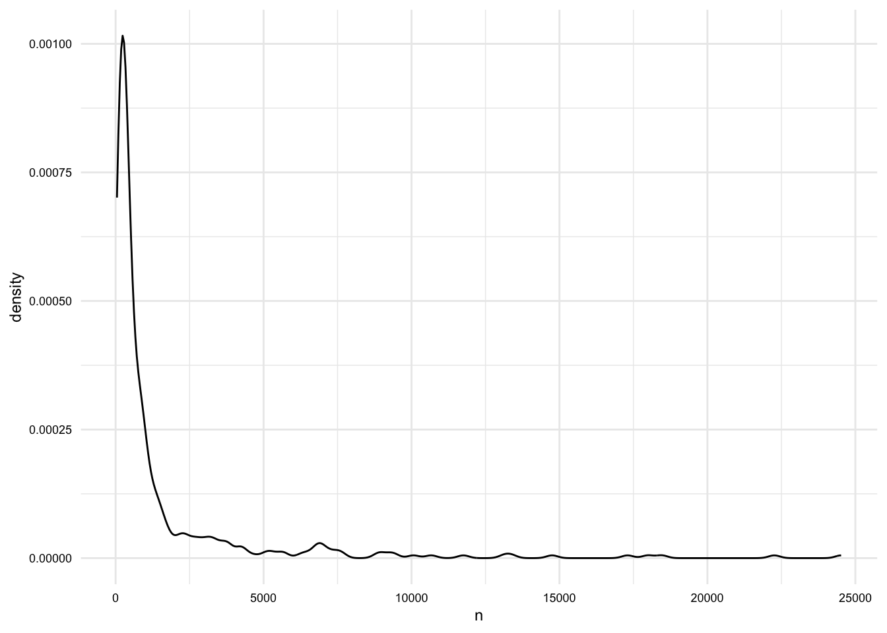
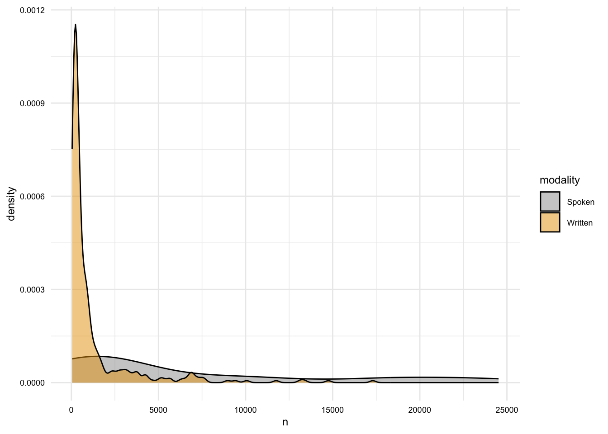
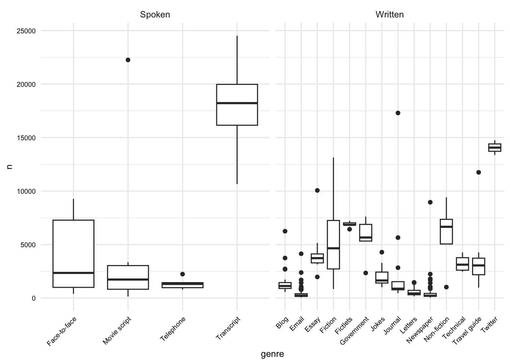

# Load packages
library(readr)
library(dplyr)
library(stringr)
library(tidyr)
library(tidytext)
library(qtalrkit)07. Transforming and documenting data
Prepare and enrich datasets for analysis
preparation
The curated dataset reflects a tidy version of the original data. This data is relatively project-neutral. A such, project-specific changes are often made to bring the data more in line with the research goals. This may include modifying the unit of observation and/ or adding additional attributes to the data. This process may generate one or more new datasets that are used for analysis. In this recipe, we will explore a practical example of transforming data.
In this recipe, we will employ a variety of tools and techniques to accomplish these tasks. Let’s load the packages we will need for this recipe. Let’s load the packages we will need for this recipe.
In Lab 7, we will apply what we have learned in this recipe to a new dataset.
Concepts and strategies
Orientation
Curated datasets are often project-neutral. That is, they are not necessarily designed to answer a specific research question. Rather, they are designed to be flexible enough to be used in a variety of projects. This is a good thing, but it also means that we will likely need to transform the data to bring it more in line with our research goals. This can include normalizing text, modifying the unit of observation and/ or adding additional attributes to the data.
In this recipe, we will explore a practical example of transforming data. We will start with a curated dataset and transform it to reflect a specific research goal. The dataset we will use is the MASC dataset (Ide et al. 2008). This dataset contains a collection of words from a variety of genres and modalities of American English.
As a starting point, I will assume that the curated dataset is available in the data/derived/masc/ directory, as seen below.
data/
├── analysis/
├── derived/
│ ├── masc_curated_dd.csv
│ ├── masc/
│ │ ├── masc_curated.csv
├── original/
│ ├── masc_do.csv
│ ├── masc/
│ │ ├── ...The first step is to inspect the data dictionary file. This file contains information about the variables in the dataset. It is also a good idea to review the data origin file, which contains information about the original data source.
Looking at the data dictionary, in Table 1.
| variable | name | description | variable_type |
|---|---|---|---|
| file | File | ID number of the source file | character |
| ref | Reference | Reference number within the source file | integer |
| base | Base | Base form of the word (lemma) | character |
| msd | MSD | Part-of-speech tag (PENN tagset) | character |
| string | String | Text content of the word | character |
| title | Title | Title of the source file | character |
| source | Source | Name of the source | character |
| date | Date | Date of the source file (if available) | character |
| class | Class | Classification of the source. Modality and genre | character |
| domain | Domain | Domain or topic of the source | character |
Let’s read in the data and take a glimpse at it.
# Read the data
masc_curated <- read_csv("data/derived/masc/masc_curated.csv")
# Preview
glimpse(masc_curated)Rows: 591,097
Columns: 10
$ file <chr> "110CYL067", "110CYL067", "110CYL067", "110CYL067", "110CYL067"…
$ ref <dbl> 0, 1, 2, 3, 4, 5, 6, 7, 8, 9, 10, 11, 12, 13, 14, 15, 16, 17, 1…
$ base <chr> "december", "1998", "your", "contribution", "to", "goodwill", "…
$ msd <chr> "NNP", "CD", "PRP$", "NN", "TO", "NNP", "MD", "VB", "JJR", "IN"…
$ string <chr> "December", "1998", "Your", "contribution", "to", "Goodwill", "…
$ title <chr> "110CYL067", "110CYL067", "110CYL067", "110CYL067", "110CYL067"…
$ source <chr> "ICIC Corpus of Philanthropic Fundraising Discourse", "ICIC Cor…
$ date <chr> NA, NA, NA, NA, NA, NA, NA, NA, NA, NA, NA, NA, NA, NA, NA, NA,…
$ class <chr> "WR LT", "WR LT", "WR LT", "WR LT", "WR LT", "WR LT", "WR LT", …
$ domain <chr> "philanthropic fundraising discourse", "philanthropic fundraisi…We may also want to do a summary overview of the dataset with {skimr}. This will give us a sense of the data types and the number of missing values.
── Data Summary ───────────────────────
Values
Name masc_curated
Number of rows 591097
Number of columns 10
_______________________
Column type frequency:
character 9
numeric 1
________________________
Group variables None
── Variable type: character ───────────
skim_variable n_missing complete_rate min max empty n_unique whitespace
1 file 0 1 3 40 0 392 0
2 base 4 1.00 1 99 0 28010 0
3 msd 0 1 1 8 0 60 0
4 string 25 1.00 1 99 0 39474 0
5 title 0 1 3 203 0 373 0
6 source 5732 0.990 3 139 0 348 0
7 date 94002 0.841 4 17 0 62 0
8 class 0 1 5 5 0 18 0
9 domain 18165 0.969 4 35 0 21 0
── Variable type: numeric ─────────────
skim_variable n_missing complete_rate mean sd p0 p25 p50 p75 p100 hist
1 ref 0 1 3854. 4633. 0 549 2033 5455 24519 ▇▂▁▁▁In summary, the dataset contains 591,097 observations and 10 variables. The unit of observation is the word. The variable names are somewhat opaque, but the data dictionary provides some context that will help us understand the data.
Now we want to consider how we plan to use this data in our analysis. Let’s assume that we want to use this data to explore lexical variation in the MASC dataset across modalities and genres. We will want to transform the data to reflect this goal.
In Table 2, we see an idealized version of the dataset we would like to have.
| variable | name | type | description |
|---|---|---|---|
| doc_id | Document ID | numeric | A unique identifier for each document |
| modality | Modality | character | The modality of the document (e.g., spoken, written) |
| genre | Genre | character | The genre of the document (e.g., blog, newspaper) |
| term_num | Term number | numeric | The position of the term in the document |
| term | Term | character | The word |
| lemma | Lemma | character | The lemma of the word |
| pos | Part-of-speech | character | The part-of-speech tag of the word |
Of note, in this recipe we will derive a single transformed dataset. In other projects, you may want to generate various datasets with different units of observations. It all depends on your research question and the research aim that you are adopting.
Transforming data
To get from the curated dataset to the idealized dataset, we will need to perform a number of transformations. Some of these transformations will be relatively straightforward, while others will require more work. Let’s start with the easy ones.
- Let’s drop the variables that we will not use and at the same time rename the variables to make them more intuitive.
We will use the select() function to drop or rename variables.
# Drop and rename variables
masc_df <-
masc_curated |>
select(
doc_id = file,
term_num = ref,
term = string,
lemma = base,
pos = msd,
mod_gen = class
)
masc_df# A tibble: 591,097 × 6
doc_id term_num term lemma pos mod_gen
<chr> <dbl> <chr> <chr> <chr> <chr>
1 110CYL067 0 December december NNP WR LT
2 110CYL067 1 1998 1998 CD WR LT
3 110CYL067 2 Your your PRP$ WR LT
4 110CYL067 3 contribution contribution NN WR LT
5 110CYL067 4 to to TO WR LT
6 110CYL067 5 Goodwill goodwill NNP WR LT
7 110CYL067 6 will will MD WR LT
8 110CYL067 7 mean mean VB WR LT
9 110CYL067 8 more more JJR WR LT
10 110CYL067 9 than than IN WR LT
# ℹ 591,087 more rowsThat’s a good start on the structure.
- Next, we will split the
mod_genvariable into two variables:modalityandgenre.
We have a variable mod_gen that contains two pieces of information: modality and genre (e.g., WR LT). The information appears to separated by a space. We can make sure this is the case by tabulating the values. The count() function will count the number of occurrences of each value in a variable, and as a side effect it will summarize the values of the variable so we can see if there are any unexpected values.
# Tabulate mod_gen
masc_df |>
count(mod_gen) |>
arrange(-n)# A tibble: 18 × 2
mod_gen n
<chr> <int>
1 SP TR 71630
2 WR EM 62036
3 WR FC 38608
4 WR ES 34938
5 WR FT 34373
6 WR BL 33278
7 WR JO 33042
8 WR JK 32420
9 WR NP 31225
10 SP MS 29879
11 WR NF 29531
12 WR TW 28128
13 WR GV 27848
14 WR TG 27624
15 WR LT 26468
16 SP FF 23871
17 WR TC 19419
18 SP TP 6779Looks good, our values are separated by a space. We can use the separate_wider_delim() function from {tidyr} to split the variable into two variables. We will use the delim argument to specify the delimiter and the names argument to specify the names of the new variables.
# Split mod_gen into modality and genre
masc_df <-
masc_df |>
separate_wider_delim(
cols = mod_gen,
delim = " ",
names = c("modality", "genre")
)
masc_df# A tibble: 591,097 × 7
doc_id term_num term lemma pos modality genre
<chr> <dbl> <chr> <chr> <chr> <chr> <chr>
1 110CYL067 0 December december NNP WR LT
2 110CYL067 1 1998 1998 CD WR LT
3 110CYL067 2 Your your PRP$ WR LT
4 110CYL067 3 contribution contribution NN WR LT
5 110CYL067 4 to to TO WR LT
6 110CYL067 5 Goodwill goodwill NNP WR LT
7 110CYL067 6 will will MD WR LT
8 110CYL067 7 mean mean VB WR LT
9 110CYL067 8 more more JJR WR LT
10 110CYL067 9 than than IN WR LT
# ℹ 591,087 more rows- Create a document id variable.
Now that we have the variables we want, we can turn our attention to the values of the variables. Let’s start with the doc_id variable. This may a good variable to use as the document id. If we take a look at the values, however, we can see that the values are not very informative.
Let’s use the distinct() function to only show the unique values of the variable. We will also chain a slice_sample() function to randomly select a sample of the values. This will give us a sense of the values in the variable.
# Preview doc_id
masc_df |>
distinct(doc_id) |>
slice_sample(n = 10)# A tibble: 10 × 1
doc_id
<chr>
1 JurassicParkIV-INT
2 111367
3 NYTnewswire6
4 sw2014-ms98-a-trans
5 52713
6 new_clients
7 cable_spool_fort
8 jokes10
9 wsj_2465
10 wsj_0158 You can run this code various times to get a different sample of values.
Since the doc_id variable is not informative, let’s replace the variable’s values with numeric values. In the end, we want a digit for each unique document and we want the words in each document to be grouped together.
To do this we will need to group the data by doc_id and then generate a new number for each group. We can achieve this by passing the data grouped by doc_id (group_by()) to the mutate() function and then using the cur_group_id() function to generate a number for each group.
# Recode doc_id
masc_df <-
masc_df |>
group_by(doc_id) |>
mutate(doc_id = cur_group_id()) |>
ungroup()
masc_df# A tibble: 591,097 × 7
doc_id term_num term lemma pos modality genre
<int> <dbl> <chr> <chr> <chr> <chr> <chr>
1 1 0 December december NNP WR LT
2 1 1 1998 1998 CD WR LT
3 1 2 Your your PRP$ WR LT
4 1 3 contribution contribution NN WR LT
5 1 4 to to TO WR LT
6 1 5 Goodwill goodwill NNP WR LT
7 1 6 will will MD WR LT
8 1 7 mean mean VB WR LT
9 1 8 more more JJR WR LT
10 1 9 than than IN WR LT
# ℹ 591,087 more rowsTo check, we can again apply the count() function.
# Check
masc_df |>
count(doc_id) |>
arrange(-n)# A tibble: 392 × 2
doc_id n
<int> <int>
1 158 24520
2 300 22261
3 112 18459
4 113 17986
5 215 17302
6 312 14752
7 311 13376
8 200 13138
9 217 11753
10 186 10665
# ℹ 382 more rowsWe have 392 unique documents in the dataset. We also can see that the word lengths vary quite a bit. That’s something we will need to keep in mind as we move forward into the analysis.
- Check the values of the
posvariable.
The pos variable contains the part-of-speech tags for each word. The PENN Treebank tagset is used. Let’s take a look at the values to get familiar with them, and also to see if there are any unexpected values.
Let’s use the slice_sample() function to randomly select a sample of the values. This will give us a sense of the values in the variable.
# Preview pos
masc_df |>
slice_sample(n = 10)# A tibble: 10 × 7
doc_id term_num term lemma pos modality genre
<int> <dbl> <chr> <chr> <chr> <chr> <chr>
1 303 2511 proliferation proliferation NN WR TC
2 76 5245 And and CC WR FT
3 300 17170 DAVY davy NNP SP MS
4 80 5341 ” ” NN WR FT
5 171 900 . . . WR TG
6 166 2588 out out RP WR BL
7 67 58 organization organization NN WR LT
8 216 2944 include include VB WR TG
9 234 1304 donation donation NN WR LT
10 231 3539 say say VB WR NF After running this code a few times, we can see that the many of the values are as expected. There are, however, some unexpected values. In particular, some punctuation and symbols are tagged as nouns.
We can get a better appreciation for the unexpected values by filtering the data to only show non alpha-numeric values (^\\W+$) in the term column and then tabulating the values by term and pos.
# Filter and tabulate
masc_df |>
filter(str_detect(term, "^\\W+$")) |>
count(term, pos) |>
arrange(-n) |>
print(n = 20)# A tibble: 152 × 3
term pos n
<chr> <chr> <int>
1 "," , 27112
2 "." . 26256
3 "\"" '' 5495
4 ":" : 4938
5 "?" . 3002
6 ")" ) 2447
7 "(" ( 2363
8 "-" : 1778
9 "!" . 1747
10 "/" NN 1494
11 "’" NN 1319
12 "-" - 1213
13 "”" NN 1076
14 "“" NN 1061
15 "]" NN 1003
16 "[" NN 1001
17 ";" : 991
18 "--" : 772
19 ">" NN 752
20 "..." ... 716
# ℹ 132 more rowsAs we can see from the sample above and from the PENN tagset documentation, most punctuation is tagged as the punctuation itself. For example, the period is tagged as . and the comma is tagged as ,. Let’s edit the data to reflect this.
Let’s look at the code, and then we will discuss it.
# Recode
masc_df <-
masc_df |>
mutate(pos = case_when(
str_detect(term, "^\\W+$") ~ str_sub(term, start = 1, end = 1),
TRUE ~ pos
))
# Check
masc_df |>
filter(str_detect(term, "^\\W+$")) |> # preview
count(term, pos) |>
arrange(-n) |>
print(n = 20)# A tibble: 127 × 3
term pos n
<chr> <chr> <int>
1 "," "," 27113
2 "." "." 26257
3 "\"" "\"" 5502
4 ":" ":" 4939
5 "?" "?" 3002
6 "-" "-" 2994
7 ")" ")" 2447
8 "(" "(" 2363
9 "!" "!" 1747
10 "/" "/" 1495
11 "’" "’" 1325
12 "”" "”" 1092
13 "“" "“" 1078
14 "]" "]" 1003
15 "[" "[" 1001
16 ";" ";" 993
17 "--" "-" 772
18 ">" ">" 753
19 "..." "." 747
20 "'" "'" 741
# ℹ 107 more rowsThe case_when() function allows us to specify a series of conditions and values. The first condition is that the term variable contains only non alpha-numeric characters. If it does, then we want to replace the value of the pos variable with the first character of the term variable, str_sub(term, start = 1, end = 1). If the condition is not met, then we want to keep the original value of the pos variable, TRUE ~ pos.
We can see that our code worked by filtering the data to only show non alpha-numeric values (^\\W+$) in the term column and then tabulating the values by term and pos.
For completeness, I will also recode the lemma values for these values as well as the lemma can some times be multiple punctuation marks (e.g. !!!!!, ---, etc.) for these terms.
# Recode
masc_df <-
masc_df |>
mutate(lemma = case_when(
str_detect(term, "^\\W+$") ~ str_sub(term, start = 1, end = 1),
TRUE ~ lemma
))
# Check
masc_df |>
filter(str_detect(term, "^\\W+$")) |> # preview
count(term, lemma) |>
arrange(-n) |>
print(n = 20)# A tibble: 127 × 3
term lemma n
<chr> <chr> <int>
1 "," "," 27113
2 "." "." 26257
3 "\"" "\"" 5502
4 ":" ":" 4939
5 "?" "?" 3002
6 "-" "-" 2994
7 ")" ")" 2447
8 "(" "(" 2363
9 "!" "!" 1747
10 "/" "/" 1495
11 "’" "’" 1325
12 "”" "”" 1092
13 "“" "“" 1078
14 "]" "]" 1003
15 "[" "[" 1001
16 ";" ";" 993
17 "--" "-" 772
18 ">" ">" 753
19 "..." "." 747
20 "'" "'" 741
# ℹ 107 more rows- Check the values of the
modalityvariable.
The modality variable contains the modality tags for each document. Let’s take a look at the values.
Let’s tabulate the values with count().
# Tabulate modality
masc_df |>
count(modality)# A tibble: 2 × 2
modality n
<chr> <int>
1 SP 132159
2 WR 458938We see that the values are SP and WR, which stand for spoken and written, respectively. To make this a bit more transparent, we can recode these values to Spoken and Written. We will use the case_when() function to do this.
# Recode modality
masc_df <-
masc_df |>
mutate(
modality = case_when(
modality == "SP" ~ "Spoken",
modality == "WR" ~ "Written"
)
)
masc_df# A tibble: 591,097 × 7
doc_id term_num term lemma pos modality genre
<int> <dbl> <chr> <chr> <chr> <chr> <chr>
1 1 0 December december NNP Written LT
2 1 1 1998 1998 CD Written LT
3 1 2 Your your PRP$ Written LT
4 1 3 contribution contribution NN Written LT
5 1 4 to to TO Written LT
6 1 5 Goodwill goodwill NNP Written LT
7 1 6 will will MD Written LT
8 1 7 mean mean VB Written LT
9 1 8 more more JJR Written LT
10 1 9 than than IN Written LT
# ℹ 591,087 more rows- Check the values of the
genrevariable.
Let’s look at the values of the genre variable.
# Tabulate genre
masc_df |>
count(genre) |>
print(n = Inf)# A tibble: 18 × 2
genre n
<chr> <int>
1 BL 33278
2 EM 62036
3 ES 34938
4 FC 38608
5 FF 23871
6 FT 34373
7 GV 27848
8 JK 32420
9 JO 33042
10 LT 26468
11 MS 29879
12 NF 29531
13 NP 31225
14 TC 19419
15 TG 27624
16 TP 6779
17 TR 71630
18 TW 28128These genre labels are definitely cryptic. The data dictionary does not list these labels and their more verbose descriptions. However, looking at the original data’s README, we can find the file (resource-headers.xml) that lists these genre labels.
1. 'BL' for blog
2. 'NP' is newspaper
3. 'EM' is email
4. 'ES' is essay
5. 'FT' is fictlets
6. 'FC' is fiction
7. 'GV' is government
8. 'JK' is jokes
9. 'JO' is journal
10. 'LT' is letters
11. 'MS' is movie script
12. 'NF' is non-fiction
13. 'FF' is face-to-face
14. 'TC' is technical
15. 'TG' is travel guide
16. 'TP' is telephone
17. 'TR' is transcript
18. 'TW' is twitterNow we can again use the case_when() function. This time we will see if genre is equal to one of the genre labels and if it is, then we will replace the value with the more verbose description.
# Recode genre
masc_df <-
masc_df |>
mutate(
genre = case_when(
genre == "BL" ~ "Blog",
genre == "NP" ~ "Newspaper",
genre == "EM" ~ "Email",
genre == "ES" ~ "Essay",
genre == "FT" ~ "Fictlets",
genre == "FC" ~ "Fiction",
genre == "GV" ~ "Government",
genre == "JK" ~ "Jokes",
genre == "JO" ~ "Journal",
genre == "LT" ~ "Letters",
genre == "MS" ~ "Movie script",
genre == "NF" ~ "Non-fiction",
genre == "FF" ~ "Face-to-face",
genre == "TC" ~ "Technical",
genre == "TG" ~ "Travel guide",
genre == "TP" ~ "Telephone",
genre == "TR" ~ "Transcript",
genre == "TW" ~ "Twitter"
)
)
masc_df# A tibble: 591,097 × 7
doc_id term_num term lemma pos modality genre
<int> <dbl> <chr> <chr> <chr> <chr> <chr>
1 1 0 December december NNP Written Letters
2 1 1 1998 1998 CD Written Letters
3 1 2 Your your PRP$ Written Letters
4 1 3 contribution contribution NN Written Letters
5 1 4 to to TO Written Letters
6 1 5 Goodwill goodwill NNP Written Letters
7 1 6 will will MD Written Letters
8 1 7 mean mean VB Written Letters
9 1 8 more more JJR Written Letters
10 1 9 than than IN Written Letters
# ℹ 591,087 more rowsDuring the process of transformation and afterwards, it is a good idea to tabulate and/ or visualize the dataset. This provides us an opportunity to get to know the dataset better and also may help us identify inconsistencies that we would like to address in the transformation, or at least be aware of as we move towards analysis.
# How many documents are in each modality?
masc_df |>
distinct(doc_id, modality) |>
count(modality) |>
arrange(-n)# A tibble: 2 × 2
modality n
<chr> <int>
1 Written 371
2 Spoken 21# How many documents are in each genre?
masc_df |>
distinct(doc_id, genre) |>
count(genre) |>
arrange(-n)# A tibble: 18 × 2
genre n
<chr> <int>
1 Email 174
2 Newspaper 54
3 Letters 49
4 Blog 21
5 Jokes 16
6 Journal 12
7 Essay 8
8 Fiction 7
9 Travel guide 7
10 Face-to-face 6
11 Movie script 6
12 Technical 6
13 Fictlets 5
14 Government 5
15 Non-fiction 5
16 Telephone 5
17 Transcript 4
18 Twitter 2# What is the averge length of documents (in words)?
masc_df |>
group_by(doc_id) |>
summarize(n = n()) |>
summarize(
mean = mean(n),
median = median(n),
min = min(n),
max = max(n)
)# A tibble: 1 × 4
mean median min max
<dbl> <dbl> <int> <int>
1 1508. 418. 45 24520masc_df |>
group_by(doc_id) |>
summarize(n = n()) |>
ggplot(aes(x = n)) +
geom_density()
# What is the distribution of the length of documents by modality?
masc_df |>
group_by(doc_id, modality) |>
summarize(n = n()) |>
ggplot(aes(x = n, fill = modality)) +
geom_density(alpha = 0.5)
# What is the distribution of the length of documents by genre?
masc_df |>
group_by(doc_id, modality, genre) |>
summarize(n = n()) |>
ggplot(aes(x = genre, y = n)) +
geom_boxplot() +
facet_wrap(~ modality, scales = "free_x") +
theme(axis.text.x = element_text(angle = 45, hjust = 1))
Once we are satisfied with the structure and values of the dataset, we can save it to a file. We will use the write_csv() function from {readr} to do this.
# Save the data
write_csv(masc_df, "data/derived/masc/masc_transformed.csv")The structure of the data/ directory in our project should now look like this:
data/
├── analysis/
├── derived/
│ ├── masc_curated_dd.csv
│ ├── masc/
│ │ ├── masc_curated.csv
│ │ ├── masc_transformed.csv
├── original/Documenting data
The last step is to document the process and the resulting dataset(s). In this particular case we only derived one transformed dataset. The documentation steps are the same as in the curation step. We will organize and document the process file (often a .qmd file) and then create a data dictionary for each of the transformed datasets. The create_data_dictionary() function can come in handy for scaffolding the data dictionary file.
# Create a data dictionary
create_data_dictionary(
data = masc_df,
file_path = "data/derived/masc/masc_transformed_dd.csv"
)Summary
In this recipe, we have looked at an example of transforming a curated dataset. This recipe included operations such as:
- Text normalization
- Variable recoding
- Splitting variables
In other projects, the transformation steps will inevitably differ, but these strategies are commonly necessary in almost any project.
Just as with other steps in the data preparation process, it is important to document the transformation steps. This will help you and others understand the process and the resulting dataset(s).
Check your understanding
- Which function would you use to remove duplicate rows in a dataset?
- The
str_c()function from {stringr} is used to separate strings rather than combine them. - The
count()function from {dplyr} is used to tabulate the values of a variable. - If you want to recode the age of learners into categories such as “child”, “teen”, and “adult” based on their age, which function should you use?
- To normalize text by removing leading and trailing whitespace, you use the
()function from {stringr}. - To normalize text by converting all characters to lowercase, you use the
()function from {stringr}.
Lab preparation
In preparation for Lab 7, review and ensure you are comfortable with the following:
- Vector, data frame, and list data structures
- Subsetting and filtering data structures with and without regular expressions
- Reshaping datasets by rows and columns
In this lab, we will practice these skills and expand our knowledge of data preparation by transforming and documenting data with Tidyverse packages such as {dplyr}, {tidyr}, and {stringr}.
You will have a choice of a dataset to transform. Before you start the lab, you should consider which dataset you would like to use, what the idealized structure the transformed dataset will take, and what strategies you will likely employ to transform the dataset. You should also consider the information you need to document the data transformation process.
References
Ide, Nancy, Collin Baker, Christiane Fellbaum, Charles Fillmore, and Rebecca Passonneau. 2008. “MASC: The Manually Annotated Sub-Corpus of American English.” In Sixth International Conference on Language Resources and Evaluation, LREC 2008, 2455–60. European Language Resources Association (ELRA).